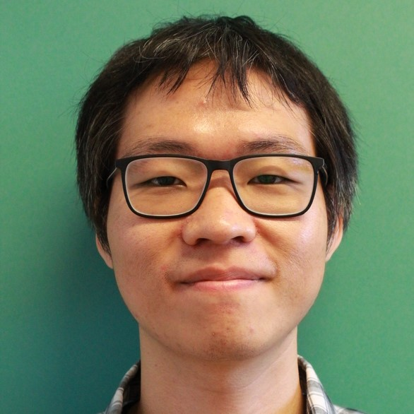
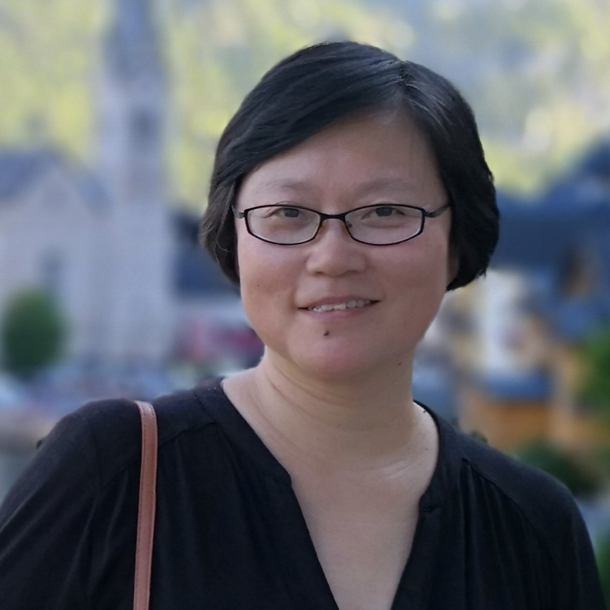
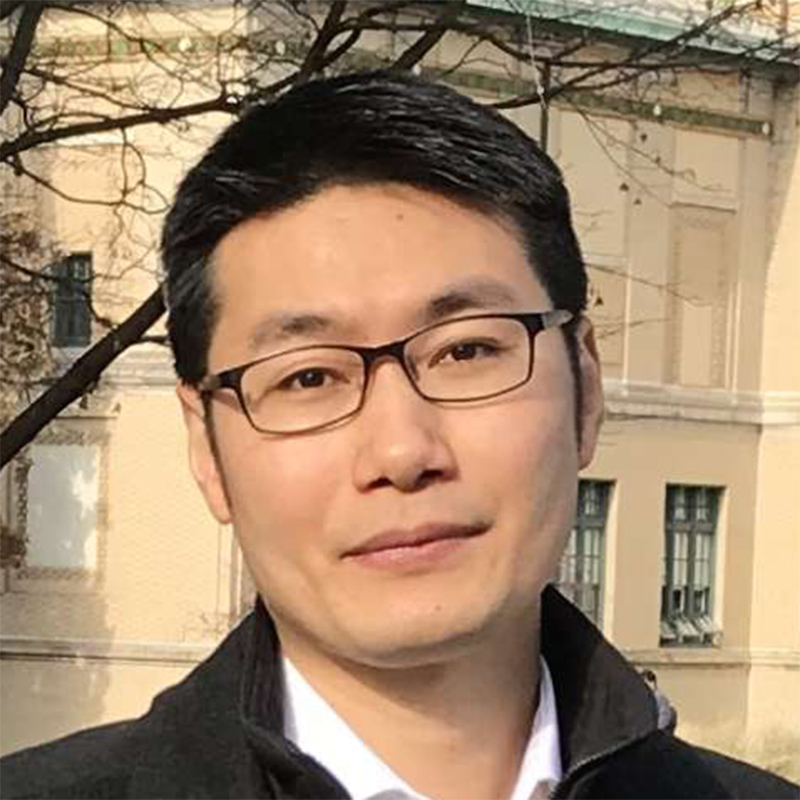

Speakers
Academic
Day 1
Chrisina Jayne
Teesside University, UKYew-Soon Ong
Nanyang Technological University, Singapore
Albert Zomaya
University of Sydney, Australia
Kenji Doya
Okinawa Institute of Science and Technology, JapanSung-Bae Cho
Yonsei University, South Korea
Deepa Kundur
University of Toronto, Canada
Pau-Choo (Julia) Chung
National Cheng Kung University, Taiwan
Jonathan H. Chan
King Mongkut's University of Technology Thonburi, Thailand
Ka-Chun Wong
City University of Hong Kong, Hong Kong, China
Weizhi Meng
Technical University of Denmark, Denmark
Vishnu Bodetti
Michigan State University, USAClaudio Angione
Teesside University, UK
Annalisa Occhipinti
Teesside University, UK
Claire Chewapreecha
King Mongkut's University of Technology Thonburi, Thailand
Shirley Siu
University of Macau, Macau, China
Tanut Karnwai
IBM Data and AI, Thailand 
Wittawat Jitkrittum
Google Research, Germany
Haiqin Yang
Ping An Life, China
Worrawat Engchuan
The Centre for Applied Genomics, CanadaDay 2

Intawat Nookaew
University of Arkansas for Medical Sciences (UAMS), USA
Stephen Grossberg
Boston University, USA
Tianbao Yang
University of Iowa, USASushmita Mitra
Indian Statistical Institute, India 
Ling Li
Curtin University, Australia
Jing Li
The Hong Kong Polytechnic University, Hong KongTiranee Achalakul
King Mongkut's University of Technology Thonburi, Thailand
Gabriela Csurka
Naver Labs Europe, FranceDay 3
Ryan Yuen
Hospital for Sick Children, Canada 
Kun Zhang
Carnegie Mellon University, USA
Tien-Tsin Wong
Chinese University of Hong Kong, Hong Kong
Masashi Sugiyama
RIKEN and The University of Tokyo, Japan
Nipon Theera-Umpon
Chiang Mai University, Thailand
Kaizhu Huang
Xi'an Jiaotong-Liverpool University, China
Dongrui Wu
Huazhong University of Science and Technology, China
Herwig Unger
FernUniversität in Hagen,Germany
Wei Zhang
The University of Adelaide, AustraliaDay 4
TBA
Dongrui Wu
Huazhong University of Science and Technology, ChinaDay 5
TBA